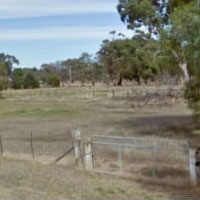
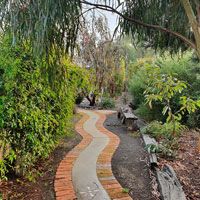
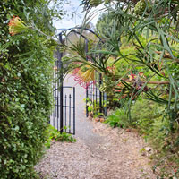
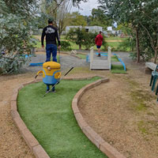
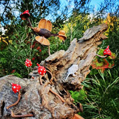

Explore Our Garden
Discover an enchanting tapestry of wonders that beckon to be explored in every corner of our garden

Garden Creations
Enchanting mushrooms and more...

Garden Sculptures
From scraps to masterpieces

Flowers
A kaleidoscope of vibrant hues

Art
Range of local artwork

Flower Bouquets
Fresh blossoms to delight the senses

The Garden
Nature meets design
Our History
Step into the rich with history of the garden, where each corner holds stories of the vibrant tapestry of its past
-

2013
From Ruins...
We acquired the land on the 11th of April, which came with the remnants of an old house in ruins. Over a span of more than 12 months, we dedicated our weekends to the task of transforming this land into something beautiful. Our efforts involved planting tube stock trees and utilizing cuttings from my existing garden. We also took care to preserve the yellow banksia rose and wisteria that had once adorned the dilapidated house.
In addition to tending to the flora, we took on the responsibility of cleaning up the area. We removed sick or dead trees, cleared away debris, and demolished the old house. Salvaging any salvageable wood, we repurposed it to build sheds, an outdoor table, and arbours. The intricate patterns on the arbours were created using the old fretwork from the veranda posts, which we had carefully saved.
-

2014
...to Home
On September 18, 2014, the foundations for our new house were laid, reclaiming the very spot where the old house once stood. We officially settled on the property by October 17 while we resided in a caravan patiently awaiting the completion of our new abode. The construction progressed steadily, and by Christmas, we could finally begin moving in.
All the yellow banksia roses and wisteria sinensis in our garden were grown from cuttings and layering techniques, derived from the main plants in our existing garden. We also utilized bricks from the old chimney to create pathways, adding a touch of history to our surroundings.
-

2015-2016
Renewed Beauty
In our quest to harmonize the elements of the past and the present, we embraced the reuse of aged fence posts and rails throughout the garden. Their weathered charm and enduring strength became integral components of our landscape, seamlessly blending with the natural surroundings. We also repurposed old tyres into pillars, flanking the main gates. These pillars now serve as an inviting canvas for vibrant plants to flourish, intertwining with the recycled rubber, breathing life into what was once considered waste.
In these initial years of our endeavor, we were fortunate to receive generous donations from kind-hearted individuals, to whom we extend our deepest gratitude. Their contributions played a vital role in our journey, providing us with invaluable items that enriched our experience and propelled our progress.
-

2017-2019
Breathing Life into Recycled Treasures
On September 16th, we started to create a mini golf course, fueled by the discovery of free online materials. This coupled with our own gravel allowed us to gather everything we needed to bring it to life.
This creative spirit continued to thrive in the subsequent years. In 2017 and 2018, Matthew embarked on a captivating artistic venture, giving birth to metal garden art. His artistic journey commenced with the creation of Kangaroos, with adorn Green Street, and Koalas, now nestled within the serene beauty of Forest Street. These captivating sculptures were masterfully fashioned from repurposed gas bottles and scrap metal, breathing new life into them. The collection has since flourished, expanding into a diverse array you can see throughout our garden. We take great pride in showcasing these awe-inspiring creations, which have become a cherished part of our landscape.
For those who share our admiration for these magnificent works of art, we offer select pieces for sale, allowing you to bring a touch of their magic into your own home. Take a piece of our creative vision with you and infuse your surroundings with the whimsy and allure that our metal garden art bestows.
-

2020-2023
Mushroom for Expansion
During the 2020 lockdown, we began paving the area beneath the majestic Kurrajong tree, creating a captivating space to appreciate its natural grandeur. Inspired by the talent of a dear friend and gifted artist, Ingrid Rudolph from Stawell, we commissioned her to adorn our 40ft shipping container along Green Street with her captivating art by depicting the old house that once stood on the very spot. Ingrid started working on it on November 20, 2020, and perfectly brought the project to completion on January 6, 2021.
We were finally ready to open our garden as a business, inviting others to experience everything we had cultivated. Alongside the natural beauty, I also began crafting unique creations which are available for purchase, including garden toadstools of all sizes, leaf stepping stones, and charming bird baths. You can feel the touch of magic these additions have brought to garden.
-
Thank
you
Today
Over the years, our dedication to nurturing the garden has remained unwavering. We have continued to expand and connect various areas, weaving a harmonious tapestry that extends from the mesmerizing mural on the shipping container. More recently, we created a captivating fairy garden beneath the ancient peppercorn trees, enchanting visitors of all ages.
With each passing year, our garden flourishes, resonating with the spirit of transformation and the allure of creativity. It stands as a testament to the beauty that can be cultivated even in the face of challenges, reminding us of the joy found in nature's embrace.
We look forward to you visiting and enjoying all it has to offer!